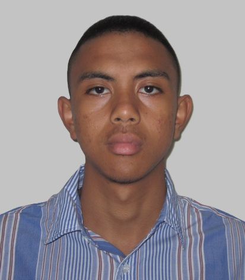

First-year undergraduate · ENI Fianarantsoa
Hi, I’m Tsanta Nisi.
Curious by nature.
Building for the web.
I’m a student developer learning by making useful, thoughtful web experiences. This is where I share what I’m exploring and the projects I’m proud to build.

01 — A LITTLE ABOUT ME
Every project is
a new lesson.
I’m RAJAOFENO Tsanta Nisi, and I go by Tsanta Nisi professionally. I’m currently a first-year undergraduate student at ENI Fianarantsoa, where I’m building a strong foundation in web development.
I enjoy turning ideas into interfaces and figuring out how the pieces fit together. From a first residence showcase page to a full-stack hospital patient-management project, every step has helped me grow—and there’s plenty more to learn.
and counting
developer
to discover
02 — THE TOOLKIT
Tools I’m learning
to build with.
A growing set of tools for creating interactive, well-structured web experiences.
Always adding something new to the toolkit.
03 — SELECTED WORK
Small steps.
Real projects.
Each project is a snapshot of what I’ve learned so far—and a reason to keep going.
04 — WHAT’S NEXT?
Let’s make
something useful.
I’m at the beginning of my journey and excited to learn, collaborate, and take on new challenges.